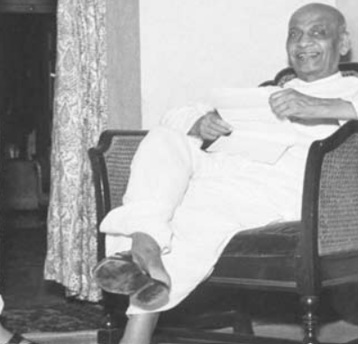

Vallabhbhai Patel (October 31, 1875 - December 15,
1950), the icon of India's solidarity and integrity and the champion of peasant's movement in
British India, was a political and social leader of India who played a major role in the country's
struggle for Independence and subsequently guided its integration into a united, Independent nation.
He is known as the 'Iron Man of India'. After the great victory of Bardoli peasants' movement,
people named him ‘Sardar'. Vallabhbhai Patel already had a successful practice as a lawyer when he
was first inspired by the work and philosophy of Mahatma Gandhi. Vallabhbhai Patel subsequently
organised the peasants of Kheda, Borsad, and Bardoli in Gujarat in a non-violent Civil Disobedience
Movement against oppressive policies imposed by the British Raj. In this role, he became the most
influential leader in Gujarat under guidance of Mahatma Gandhi. He rose to the leadership of the
Indian National Congress in 1931 at the Karachi Congress Session and was at the forefront of all
political events from 1931 onwards, at national level. He was a key figure in organising the party
for elections in 1934 and 1937 and promoting the Quit India Movement of 1942, which resulted into
arrest of almost all the leaders of freedom struggle.
As the first Home Minister and Deputy Prime
Minister of India, Sardar Patel organised relief for refugees in Punjab and Delhi as well as led
efforts to restore peace across the nation. Sardar Patel took charge of the task to forge a united
India from the 562 semi-autonomous princely states and British-era colonial provinces. Using frank
diplomacy backed with the option (and the use) of military action, Sardar Patel's leadership enabled
the accession of almost every princely state. Hailed as the Iron Man of India, he is also remembered
as the 'Patron Saint' of India's civil servants for establishing modern all-India services. Sardar
Patel was also one of the earliest proponents of property rights and free enterprise in India. His
contribution as the Chairman of the Constitutional Committee on Fundamental Rights, Minorities'
rights, Provincial Constitutions, and Demarcation of Borders of Scheduled Areas are the pillars of
the Indian Constitution.
EARLY LIFE OF
∥SARDAR VALLABHBHAI PATEL∥

∷SHORT INTRO ABOUT VALLABHBHAI PATEL∷
Birth:October 31,1875
Birth Place:Nadiad town, Gujrat
Early life and school education:karamsad, Petalad and Nadiad
Parents :Father Jhaverbhai, a farmer, and mother Laad Bai, a simple homemaker
Wife:jhaverba, who passed way at a very early age in 1909
Children:daughter Maniben (Born in 1903); son Dahyabhai(Born in 1905)
Death:December 15,1950

- Sardar Vallabhbhai Patel played an important role in the challenging task of keeping India united through his leadership. He has been an important contributor to the creation of post-independence India. As India's first Home Minister and Deputy Prime Minister, he aimed to rule smoothly and well. He always stayed away from animosity and believed in keeping people together. Apart from taking people from different castes and communities along in the freedom struggle, he also made the farmers of India active.
- Sardar's career as a lawyer before he joined the freedom struggle is a reflection of his strong and strong morale. He always wanted to be a barrister because of his intelligent talent. Of course, in those days one had to go to England to fulfill such a dream. Born into an ordinary peasant family, Sardar did not have the money to study in a normal college in India nor was it possible for him to travel to England.
-
However, due to the strong morale of the young man, despite many obstacles and obstacles, he studied hard to realize his dream and took books borrowed from a lawyer friend and sat at home. He then started attending court sessions and taking into account and understanding every argument that took place in court. As a result, he successfully cleared the legal examination and started practicing as a lawyer in Godhra. - The other bright side of Sardar's personality came to light later. When he became financially sound to travel abroad, he first sent his elder brother Vitthalbhai to England for higher studies. Vitthalbhai was also a lawyer by profession. It was only after his elder brother returned from England that he left for England in 1910 to study. Where he passed the first rank in the barrister-at-law examination. He returned from England in 1913.
- Inspired by him after his meeting with Mahatma Gandhi in Godhra, Sardar took the lead in the freedom struggle after which he became a lifelong friend of Gandhiji. In addition, after the success of the Champaran Satyagraha, he followed Gandhiji's activities and activities.
- The crucial moment for Sardar came in 1918 when the floods in Kheda caused severe damage to the crops of farmers across the district. The farmers had appealed to the British to give relief from tax, but they were not given any kind of help by the British. As a result, Sardar joined Gandhiji in this fight against the British.
- In this battle, when Gandhiji was looking for a person who would fight for the peasants in his own absence, Sardar voluntarily took the lead. He never worked with an unfinished mind and that is why he started. He quit advocacy and also started wearing khadi clothes during the non-cooperation movement against the British. The result came as expected. After negotiating with the British government to withdraw the tax, the British agreed to give tax relief based on Sardar's terms. This was his greatest success, after which there was no time to look back at the sardar called the son of the soil.
- Sardar joined the administration of the city to prepare the way for a clean and planned administration for Ahmedabad. Prior to the freedom struggle, he was elected from Daryapur constituency of Ahmedabad on 5 January 1917 by a single vote. At that time he was practicing law. In 1924, he was elected president of the Ahmedabad Municipal Corporation. He held this post till 1928 after being elected as the president of the municipality.He held this post till 1928 after being elected as the president of the municipality. During his tenure as president, he started several public welfare schemes including electricity, water, educational reforms in the city.
- Sardar's role in the freedom movement After the success of kheda satyagraha, nagpur flag satyagraha and borsad satyagraha, in 1928, Sardar Patel once again raised his voice against the arbitrary increase in land tax on behalf of the farmers in Bardoli. Sardar united the farmers for this victory over the british's strict tax laws and asked them not to pay a single penny as tax. Sardar fought until the British government bowed down.He was also arrested on March 7, 1930, for his participation in a civil disobedience struggle in 1930. He was later released and elected president of the Congress at a session held in Karachi in 1931. In August 1942, the Indian National Congress launched the Quit India Movement. For this, Sardar, along with other freedom fighters, was also sentenced to three years in jail.
- After India's independence, some maharajas and nawabs of the 562 princely states felt that they would be able to rule their kingdoms independently again as they did before the arrival of the British. He also argued before the government of independent India that they should be given equal status. However, Sardar Patel was able to convince the kings and nawabs for the merger of princely states in independent India due to his intelligence, foresight and strategic skills.


MAJOR FACT
IT'S REAL FACT ABOUT SARDAR PATEL
- He led farmers in various successful Satyagrahas in Kheda 1918, Borsad 1924 and Bardoli 1928.
- Elected as Ahmedabad's Municipality President in 1924 and worked till April 1928.
- Elected President of the Indian National Congress in 1931 in Karachi Session. Independent India's first Deputy Prime Minister, Home Minister and Information and Broadcasting Minister.
- The Architect of United India post-Independence.
- Held the charge of Prime Minister of India four times on different occasions till 1950.
- Charted the Indian Constitution by drafting provisions for important subjects as a Chairman.
- Posthumously, conferred with Bharat Ratna in 1991.